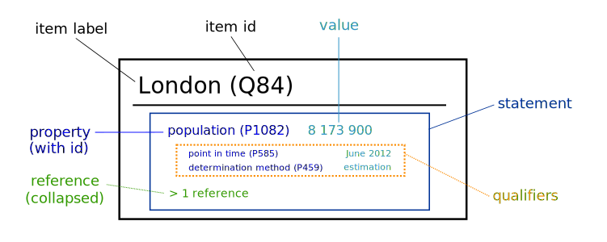

Wikidata +
Pressearchiv 20. Jh.
Netzwerk Pressedokumentation, 5.5.2022

https://jneubert.github.io/slides/wd-netzwerk-pressedokumentation-2022/

Note: Wer hat schon - von Wikidata gehört? - Abfragen an Wikidata formuliert? - zu Wikidata beigetragen?
Agenda
- Was ist und wie funktioniert Wikidata?
- Wie können Archive
- es nutzen?
- sich verlinken?
- beitragen?
Wikidata ist ...
... eine freie, kollaborative und vielsprachige Wissensdatenbank.
- Daten für alle Zwecke frei verfügbar (CC0-Lizenz)
- jede/r kann ändern (wie in Wikipedia)
- Inhalte für alle Sprachen verfügbar
Note: Aus Wikipedia entstanden - Information an einer Stelle - Verknüpfung Sprachversionen
explizit auch für andere Nutzungen
Strukturierte Daten

Note: Wikidata besteht im Wesentlichen aus - Items - eindeutig identifiziert durch Qids - mit einem Label pro Sprache - Statements mit - Property - eindeutig identifiziert durch Pids - ebenfalls ein Label pro Sprache - Wert (String, Datum, Item, etc) - optional Qualifier und Referenzen
Beispiel-Item
Note: Englische / deutsche Fassung (Link) - nicht nur Text zu dem Item selbst, sondern auch die Bezeichnungen verlinkter Items und der Properties folgen der bevorzugten Sprache - Referenzen - Items nicht nur zu Personen, sondern auch zu Orten, Organisationen, Werken, abstrakten Konzepten ...
Nutzung - Schnittstellen
- Website ← Wikipedia verlinkt auf Items (Wikidata-Datenobjekt, unter Werkzeuge)
- Abfragen über http://query.wikidata.org/ (SPARQL)
- Gesamt-Datendumps
- API (JSON)
- Applikationen auf Grundlage der API
Verlinkung zu externen Daten - Beispiel
eigene Sektion auf den Wikidata-Webseiten:
Identifier / Bezeichner
Note: Nochmal Agarwal - Sektion Identifier / Bezeichner - Link zu RePEc - direkter Zugriff auf Working Papers der Autorin
Verlinkungs-Mechanismus
- ca. 4000 Properties vom Datentyp "external-id"
- große Vielfalt, z.B.:
- GND / VIAF / Geonames IDs
- Proteine
- afrikanische Pflanzen
- schwedische Kulturerbe-Objekte
- funktionsfähige Links (in Verbindung mit einem URL-Template)
- die Einrichtung von neuen Properties kann jede/r beantragen (Beispiel)
- Toolunterstützung, insbesondere Mix-n-Match
Wie können Archive beitragen?
- Links zu ihren Beständen
- fehlende Werte für Properties ergänzen (mit Tools wie QuickStatements)
- fehlende Items ergänzen (dito)
- s.a. Relevanzkriterien
z.B. Pressemappe 20. Jahrhundert
- alle 5.266 Personenmappen verlinkt (346 neue Items)
- zusätzliche Daten (z.B. Berufsangaben für Wirtschaftswissenschaftler/innen)
- zusätzliche Verknüpfungen (z.B. Familie Warburg)
- in Abfragen und Anwendungen nutzbar
- z.B. Karte von Wirtschaftswissenschaftler/innen der Pressemappe per Wikidata-Abfrage
Note: Vorbereitung einer Data Donation an Wikidata - konkret die Metadaten - ZBW bleibt in der Verantwortung (Wikidata als sekundäre Datenbank)
Agieren in der Wikidata-Community
- Beteiligung mit individuellem User (tunlichst unter Offenlegung der beruflichen Einbindung - Beispiel)
- keine zentrale Entscheidungsstruktur
- Konsensbildung, mit dem Project Chat als wichtigstem Forum
- Mailingliste / "Weekly Summary"
- WikiProjects, um Themen zu fokussieren (oft auch gute Anlaufstelle für Datenstrukturierung)
z.B.
Wikidata für Archive
- erhöhte Sichtbarkeit (zusätzlicher Discovery-Kanal)
- Kontextualisierung für die eigenen Bestände, ohne die Daten selbst erheben/speichern zu müssen
- Crowdsourcing für eine erweiterte Erschließung?
- Andocken an weltgrößten Linking Hub
- niedrigschwelliger Einstieg in Linked Open Data
Vielen Dank -
Fragen willkommen!
Joachim Neubert
j.neubert@zbw.eu
auf Wikidata: Jneubert

zusätzliches Material
Qualitätssicherung bei Wikidata
- Jeder kann alles ändern: Chancen des Crowdsourcings ./. Gefahr der Kompromittierung
- Grundansatz: Anforderung, für jeden einzelnen Fakt Quellen zu benennen
- Unterstützung von Autor/innen bei der Eingabe durch Constraints (z.B. Format ISBN, z.B. Geburtsdatum < Todesdatum)
- alle Versionen bleiben mit Autor, Änderungszeitpunkt und Inhalt erhalten
- Zurücksetzen einer Änderung technisch sehr einfach
Note: Vandalismus und Überprüfung verdächtiger Einträge ´(new editor changing statement) - erfahrener User setzt Bearbeitung zurück - beim 2. Mal: Admin erhöht Schutzlevel der Seite
Automatische Tools zur Vandalismuserkennung
- Patroling ist Handarbeit => Fokussierung unerlässlich
- Tools zur Filterung aller händischen Änderungen auf "verdächtige" (z.B. "neuer Editor löscht Statement")
- zunehmender Einsatz von regelbasierten oder machine-learning Tools